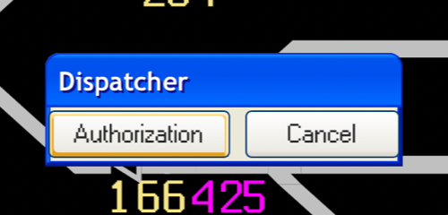
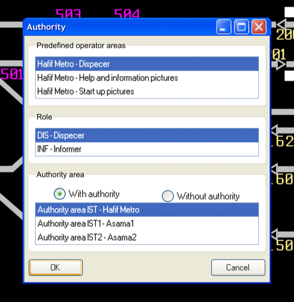
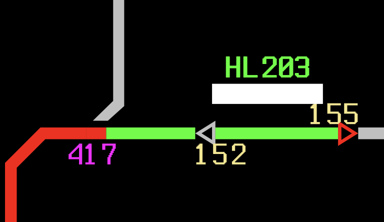
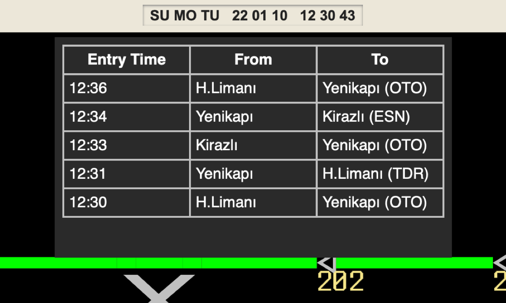
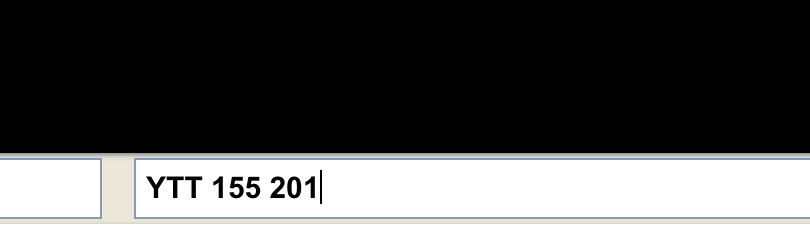

DispatchStation, İstanbul Metrosu M1 hattında kullanılan anklajman ve ATS sisteminin web üzerinden bir simülasyonudur.
Otogar, Esenler ve Terazidere istasyonlarını kapsayan ekran simüle edilmektedir. Trenler bu noktadan farklı istasyonlara gittiği için farklı rotaların oluşturulması gerekmektedir. Dolayısıyla trafik operatörleri tarafından en çok bu ekran kullanılmaktadır.
Hattaki sinyalizasyon sistemi (CITYFLO 250) dört bilgisayar türünden oluşmaktadır:
Esenler yerleşkesindeki MAN90 trafik operatörü sistemi
Kaynak: Nevzat BAYRAK
Bu proje, OPStation programını bir web arayüzünde simüle eder. Trafik operatörü, yetki aldıktan sonra objelerin durumlarını değiştiren ve rotalar açan komutlar yazabilir.
Komut yazabilmek için öncelikle yetki almak gerekir.
İlk popup penceresinde "Authorization" tuşuna tıklayın.
Ardından, bir sonraki pencerede "OK" tuşuna tıklayın.
Bu adımları tamamladıktan sonra aşağı sağdaki alanda komutlar yazabilirsiniz.
Rota tanzimi yapabilmek için trenlerin gidiş yönlerini bilmek gerekir.
Herhangi bir ucunda sinyaller bulunan bloklarda gelecek trenin ID'si otomatik olarak gösterilir.
Bu ID, trenin yönünü de içerir. Mümkün olan yönler bir sonraki başlıkta gösterilmiştir.
Trenlerin yönünü öğrenmek için başka bir seçenek ise zaman çizelgesidir.
İmleci tarih & Saat penceresinin üzerine getirerek zaman çizelgesini görüntüleyebilirsiniz.
İpucu: Tarih & saat penceresine tıklayarak tam ekran moduna geçebilirsiniz.
Burada, trenlerin yönlerini ve ekranınıza giriş saatlerini görebilirsiniz.
Yönle birlikte gelecek istasyon da gösterilmektedir. Bu şekilde, hat hakkında bilginiz yoksa gereken rotayı daha kolay bulabilirsiniz.
En çok kullanılan komut, sinyaller arasında rota tanzimini sağlayan YTT'dir. Örneğin, Yenikapı'dan Havalimanı'na giden bir tren için "YTT 155 201" komutu ile rota tanzim edilebilir.
Bu komutu çalıştırmak için klavyenizden Enter'a tıklayın.
Farklı trenler için rota tanzim ederken gerekli komutların bulunduğu bu tablodan yararlanabilirsiniz.
| Tren ID'sinin başlangıcı | Başlangıç | Son İstasyon | Komut |
|---|---|---|---|
| HY | H.Limanı | Yenikapı | YTT 202 154 |
| HL | Yenikapı | H.Limanı | YTT 155 201 |
| KY | Kirazlı | Yenikapı | YTT 304 154 |
| KR | Yenikapı | Kirazlı | YTT 155 303 |
Tanzim etmek istediğiniz rotanın bir kısmı yüksek trafik yüzünden meşgul ise rotaları parçalı olarak başka sinyaller arasında da açabilirsiniz.
Ekran görüntüsündeki durum gibi, bir tren Otogar (OTG) istasyonunda yanlış perona yönlendirilebilir. Bu problemin çözümü oldukça basittir.
Bloklar boşaldıktan sonra normal işletmeye geri dönebilirsiniz
| Komut | Açıklama | Örnek |
|---|---|---|
| YTT (Yol Tanzim Talebi) | Belirtilen sinyaller arasında rota tanzim eder. Bu mümkün değilse, rotayı mümkün olduğunda tanzim edebilmek için sıraya ekler. | YTT 155 201 |
| YTI (Yol Tanzim İptali) | Rota tanzim için sırafa bekliyorsa bu rotayı sıradan kaldırır. | YTI 155 201 |
| CTI (Çoklu Tanzimli Yol İptali) | Belirtilen sinyaller arasındaki rotayı iptal eder. | CTI 155 201 |
| TYI (Tanzimli Yol İptali) | Geçmiş 15 saniye içerisinde tanzim yapıldıysa en son tanzim edilen rotayı, bir sinyal belirtilmişse bu sinyalden başlayan rotayı iptal eder. | TYI / TYI 155 |
| OBL (Otomatik Bloke) | Belirtilen sinyalin otomatiğini iptal eder. Rotalar YTT ile tekrardan tanzim edilebilir. | OBL 156 |
| OSE (Otomatik Serbest) | Belirtilen sinyali otomatik blok sinyaline çevirir. Girilen blok boşsa, tren hareketine devam edebilir. | OSE 156 |
| TSK (Tüm Sinyaller Kapalı) | Bütün sinyalleri kapatır. | TSK |
| BSK (Blok Sinyali Kapalı) | Sinyali kapatır ve bloke eder. | BSK 155 |
| KSI (Kapalı Sinyal İptali) | Sinyali normal operasyona geri döndürür. | KSI 155 |
| MBL (Makas Bloke) | Belirtilen makası bloke eder. | MBL 421 |
| MSE (Makas Serbest) | Belirtilen makası serbest bırakır. | MSE 421 |
| MLK (Makas Lokal Kumanda) | Belirtilen makası lokal kumandaya alır. Bu moddaki makaslara OPStation'dan kumanda edilemez. | MLK 421 |
| MMK (Makas Merkezi Kumanda) | Belirtilen makası merkezi kumandaya alır. | MMK 421 |
| MSA (Makas Sağa) | Belirtilen makası sağa çevirir. | MSA 421 |
| MSO (Makas Sola) | Belirtilen makası sola çevirir. | MSO 421 |
| MNG (Makas Numaralarını Göster) | Makas numaralarını gösterir. | MNG |
| SSG (Sinyal Numaralarını Göster) | Sinyal numaralarını gösterir. | SSG |
| RDG (Ray Devrelerini Göster) | Ray devrelerini gösterir. | RDG |
| SMG (Hiçbir Obje Gösterme) | Bütün objeleri ekrandan kaldırır. | SMG |
| TND (Tren Numarasını Değiştir) | Belirtilen trenin numarasını değiştirir. | TND HY501 HL501 |
| TYL (Tren Yer Listesi) | Trenlerin yerlerinin ve bir sonraki kapalı sinyallerinin listesini gösterir. | TYL |
| SAM (Sinyal Akşam Modu) | Sinyalleri akşam moduna geçirerek parlaklıklarını azaltır. | SAM |
| SGM (Sinyal Gündüz Modu) | Sinyalleri gündüz moduna geçirerek parlaklıklarını arttırır. | SGM |